<!DOCTYPE html>
<html lang="ja" dir="ltr">
  <head>
    <meta charset="utf-8">
    <title>JSのおさらい(progateのやつ)</title>
    <link rel="stylesheet" type="text/css" href="reviewJsJQuery.css">
    <link rel="shortcut icon" href="faviconForJSCheck.ico">
  </head>

<body>
<!-- ここからbody ここからbody ここからbody ここからbody ここからbody ここからbody ここからbody ここからbody -->
<div id="allHide" class="allLight" ></div>


<header>
  <h1>JSのおさらい(progateより)</h1>
  <!-- ここに左の目次をここに左の目次をここに左の目次をここに左の目次を -->
  <div id="fixed">
    <h3 id="titleOfContents">もくじ</h3>
    <ul id="tableOfContents">
      <a href="#first"><li> ${}を使う時</li></a>
      <a href="#second"><li> !==</li></a>
      <a href="#third"><li> Switch</li></a>
      <a href="#fourth"><li>while</li></a>
      <a href="#fifth"><li> for</li></a>
      <a href="#sixth"><li> 複数の値</li></a>
      <a href="#seventh"><li> object</li></a>
      <a href="#eighth"><li> undefined</li></a>
      <a href="#ninth"><li> 複雑なobject</li></a>
      <a href="#tenth"><li> unctionの中で定義<br>（関数）</li></a>
      <a href="#eleventh"><li> クラス</li></a>
      <a href="#twelfth"><li> 少し複雑なクラス、<br>
        オブジェクト</li></a>
      <a href="#thirteenth" ><li> あとで</li></a>
    </ul>
  </div>

</header>

<!-- セクション完成したやつから<nav>にまとめてる -->

      <section>
        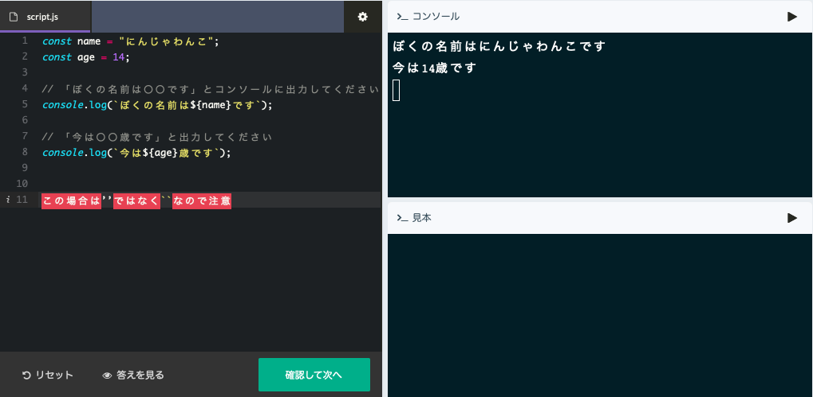
        <h2 class="right-title">${}を使う時</h2>
        <p class="right-explanation"><span class="positionForP">テキストの中に変数を入れるときはこの場合<br>
           + age + <br>のやり方でも良いが、
          <em>${}</em> を使い変数を入れるときは <br><em>' '</em> ではなく <em>``</em> <br>を使う必要がある</span></p>
      </section>

      <section>
        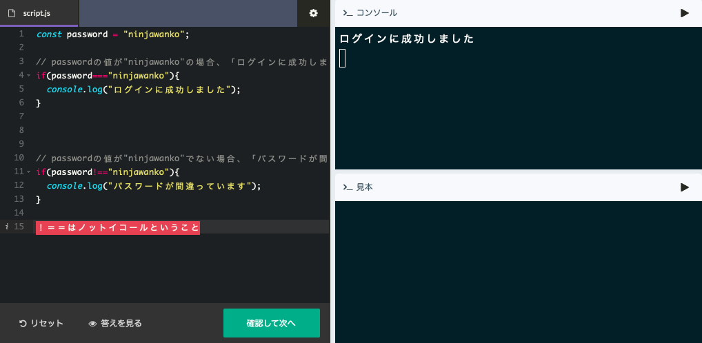
        <h2 class="left-title">!==</h2>
        <p class="left-explanation"><span class="positionForP"><em>!==</em>は≠という意味でif文などによく使う<br>
        見落としやすいので注意が必要</span></p>
      </section>

      <section>
        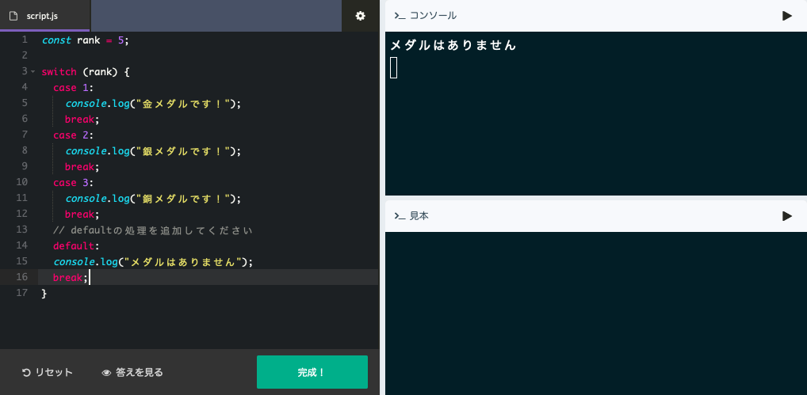
        <h2 class="right-title">Switch</h2>
        <p class="right-explanation"><span class="positionForP"> switchはこの形をしっかりと覚える<br>
        どのcaseにも当てはまらないことなんてないような時でも<br>最後に<em>default</em>は置く</span></p>
      </section>

      <section>
        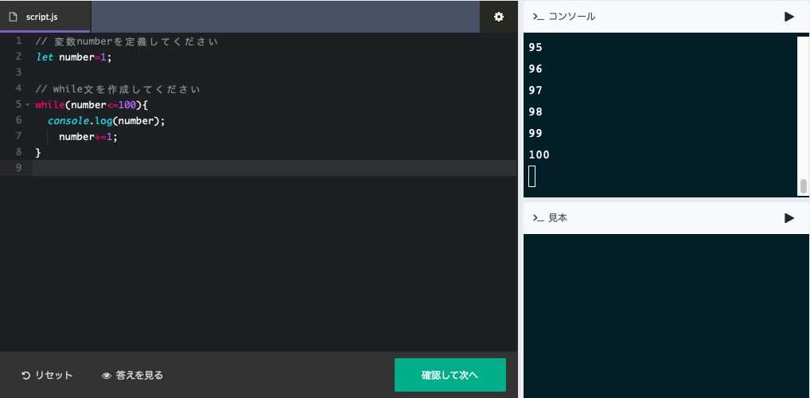
        <h2 class="left-title">while</h2>
        <p class="left-explanation"><span class="positionForP">whileの<em> ( ) </em>の中に繰り返しがどこまで続くのかを記載する</span></p>
      </section>

      <section>
        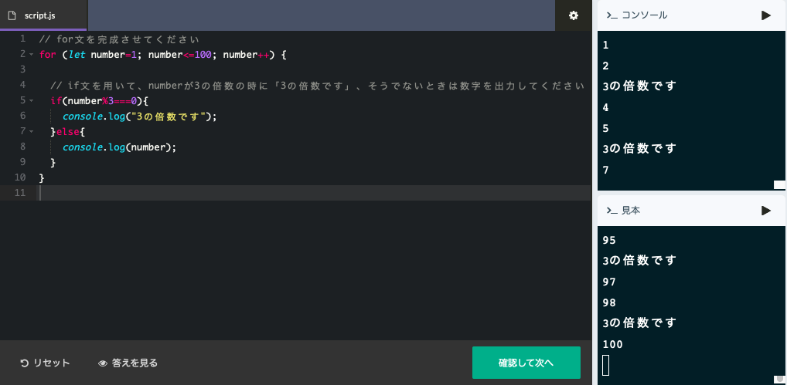
        <h2 class="right-title">for</h2>
        <p class="right-explanation"><span class="positionForP">複数の値を定義した後に [0] の部分を i と定義してよく使う</span></p>
      </section>

      <section>
        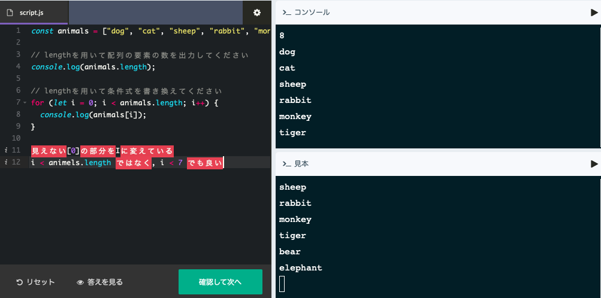
        <h2 class="left-title">複数の値</h2>
        <p class="left-explanation"><span class="positionForP">この<em> .length </em>はめっちゃよく使う</span></p>
      </section>

      <section>
        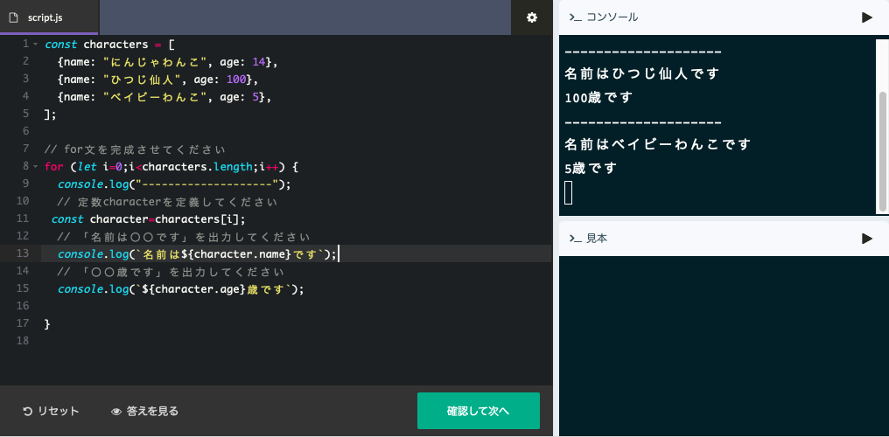
        <h2 class="right-title">object</h2>
        <p class="right-explanation"><span class="positionForP">この画像のようにオブジェクトで定義したものを<br>
          さらに別の値に定義することはよくあるので<br>慣れておく必要がある</span></p>
      </section>

      <section>
        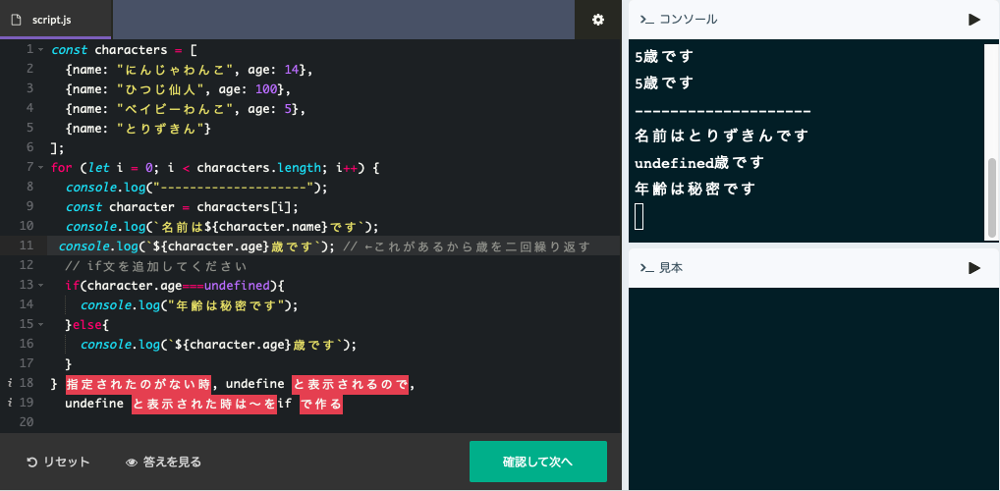
        <h2 class="left-title">undefined</h2>
        <p class="left-explanation"><span class="positionForP">画像がわかりにくくなっているけど<br>
          コンソールは下の方だけ表示している<br>
          結局はオブジェクトに指定されているものがなかったら<br>
        <em>undefined</em>と表示される<br>
        　→　それならundefinedの時　〜と表示する　とやっているだけ</span></p>
      </section>

      <section>
        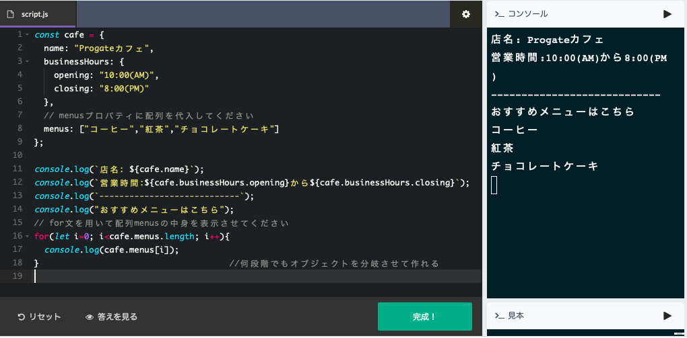
        <h2 class="right-title">複雑なobject</h2>
        <p class="right-explanation"><span class="positionForP">object　の中に　object　を入れるやり方</span></p>
      </section>

      <section>
        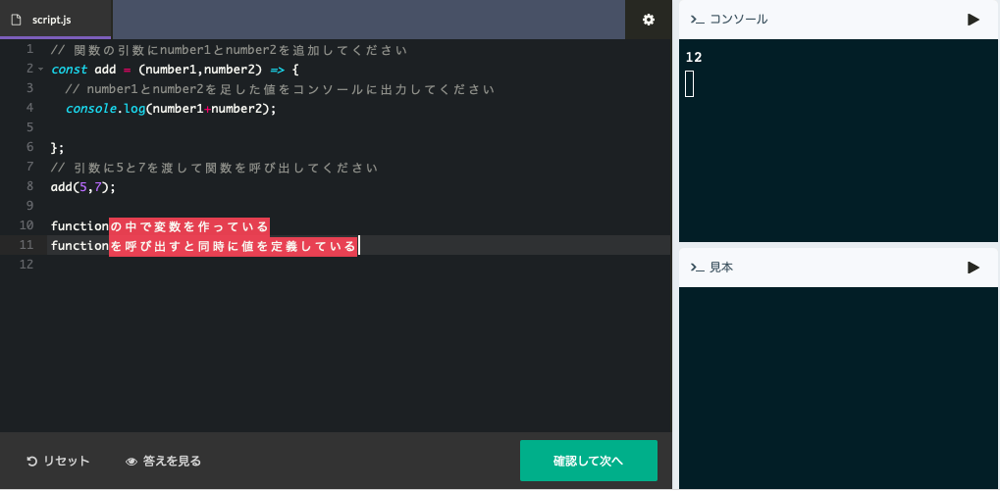
        <h2 class="left-title">functionの中で定義（関数）</h2>
        <p class="left-explanation"><span class="positionForP">(number1,number2)=> { }とやっているが<br>
        function(number1,number2) { } とやる方が一般的<br>
        どちらでも良し<br>
        このnumber1,2を<em>引数</em>と呼ぶ
         </span></p>
      </section>

      <section>
        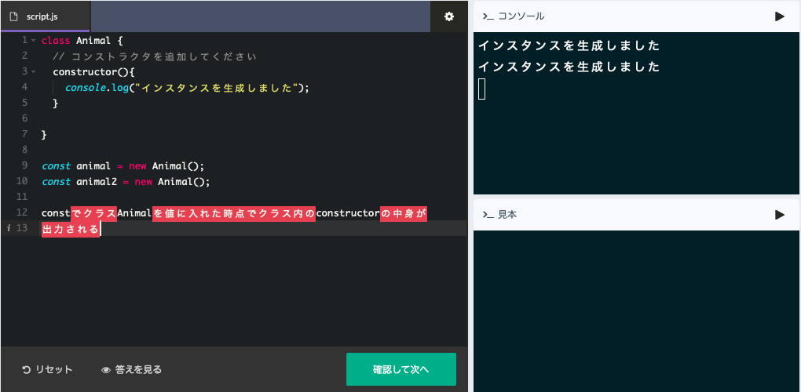
        <h2 class="right-title">クラス</h2>
        <p class="right-explanation"><span class="positionForP">画像にある通り、クラスを値に入れただけでクラスの中が起動する<br>
        このときはconstructorという名前で関数を作っていたが<br>名前は何でも良い</span></p>
      </section>

      <section>
        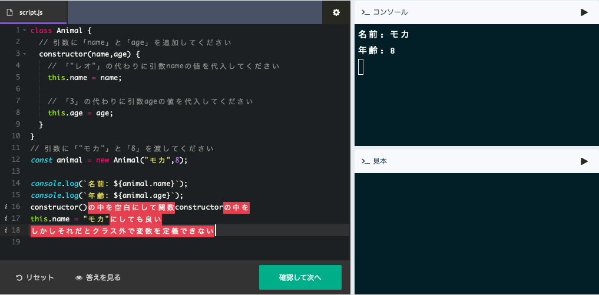
        <h2 class="left-title">少し複雑なクラス、オブジェクト</h2>
        <p class="left-explanation"><span class="positionForP">少し複雑に見えるが結局、<br>
        クラスを作る<br>
        ↓<br>
        クラスの中に関数を作る<br>
        ↓<br>
        引数を決めながらクラスを代入<br>
        とやっているだけ</span></p>
      </section>

<section>
  
  <h2 class="right-title"></h2>
  <p class="right-explanation"></p>
</section>


<footer>
  <div id="forFooter">
    <div id="endroll">
      <p class="forFooter">2019/7/8</p>
      <p class="forFooter">progateから</p>
      <a href="https://firejellyfish.github.io/new.reviewjQuery/#sixth" target="_blank"><p>jQueryはここから</p></a>
    </div>
  </div>

</footer>

<script src="https://code.jquery.com/jquery-3.4.1.js"></script>
<script src="reviewJsJQuery.js"></script>
  </body>


</html>
